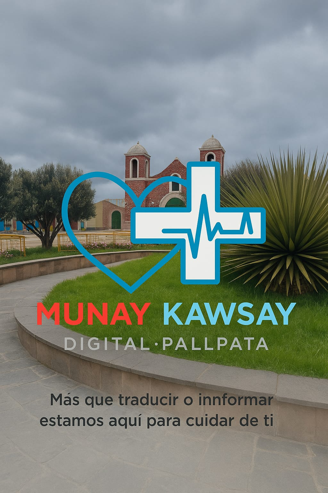
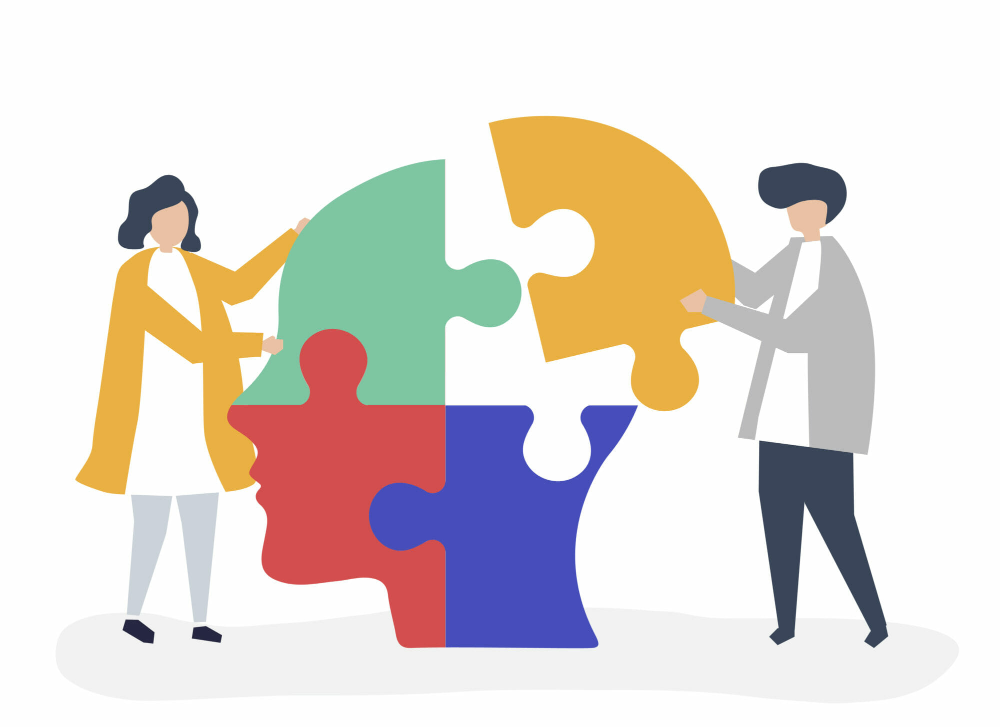

Quiénes Somos
Somos un equipo emprendedor joven y comprometido con el desarrollo de nuestra comunidad de Pallpata. Nuestro proyecto, Allin Kawsay Digital, nace como respuesta a la necesidad urgente de contar con información en salud clara, accesible y confiable, considerando la diversidad cultural y lingüística de nuestra población.
Nos caracterizamos por trabajar de manera colaborativa, con responsabilidad y creatividad, integrando la tecnología, la cultura y la salud en una sola propuesta. Apostamos por el uso del quechua y el español como puentes de comunicación, buscando romper la brecha del idioma que limita el acceso a la orientación en salud.
Creemos firmemente que la innovación digital puede convertirse en una herramienta para transformar la vida de las personas, fortaleciendo la identidad cultural y promoviendo el bienestar de nuestra comunidad.
Misión
Brindar a la población de Pallpata una plataforma digital inclusiva y confiable que facilite el acceso a información en salud —en español y quechua— con contenidos claros, prácticos y culturalmente pertinentes, contribuyendo a mejorar la calidad de vida y la prevención de enfermedades en nuestra comunidad.
Visión
Ser reconocidos como la primera plataforma digital bilingüe en salud comunitaria en la provincia de Espinar, consolidándonos como un referente regional en innovación social y tecnológica; y expandir nuestro impacto hacia otras comunidades rurales del Perú, aportando a la construcción de un futuro más saludable, informado y culturalmente integrado.
Nuestros Valores
Innovación
Impulsamos ideas creativas y nuevas tecnologías para responder a las necesidades locales.
Compromiso social
Trabajamos con responsabilidad, pensando siempre en el bienestar de nuestra comunidad.
Respeto intercultural
Valoramos nuestra lengua quechua y la integramos como elemento central de nuestro proyecto.
Accesibilidad
Nos aseguramos de que la información sea clara, sencilla y al alcance de todos.
Trabajo en equipo
Creemos en la colaboración y la unión de esfuerzos para lograr un impacto real.
Transparencia
Mantenemos una comunicación clara y honesta en todo lo que hacemos.
Videos Informativos
Información de Primeros Auxilios
Heridas Leves
Cuidados básicos para heridas menores.
Heridas
Heridas Graves
Cuándo buscar ayuda médica y cómo actuar.
Heridas
Recomendaciones
Consejos adicionales para evitar complicaciones.
Heridas
Intoxicaciones
Cómo actuar en casos de intoxicación por alimentos o sustancias químicas.
Intoxicaciones
Reacciones Alérgicas Graves
Identifica los síntomas de una reacción severa y cómo responder.
Alergias
Quemaduras
Clasificación y primeros auxilios según el tipo de quemadura.
Cómo actuar ante quemaduras
Apoyo Psicológico y Bienestar Emocional
Si necesitas orientación, acompañamiento o simplemente alguien que te escuche, recuerda que no estás solo(a). Nuestro equipo de psicología está aquí para ayudarte, brindando atención profesional, talleres y recursos para cuidar tu bienestar emocional. Pedir ayuda es un acto de fortaleza. ¡Estamos contigo!

Estrés, Ansiedad y Depresión
Sentirse estresado, ansioso o con falta de energía emocional es más común de lo que parece. Estas emociones pueden ser una respuesta natural a situaciones difíciles, pero si se prolongan en el tiempo o afectan tu vida diaria, es importante atenderlas.
El estrés se manifiesta cuando las exigencias del entorno superan tu capacidad para afrontarlas. La ansiedad genera preocupación constante, miedo o tensión, incluso sin una causa clara. La depresión puede llevar a una profunda tristeza, pérdida de interés y cansancio emocional. Todos estos estados son tratables con el acompañamiento adecuado.
No estás solo(a). Hablar con un profesional puede ayudarte a comprender lo que sientes, manejarlo mejor y recuperar tu bienestar emocional.
Audios de apoyo
Qué hacer en caso de bullying
Conflicto familiar
Salud Sexual
La salud sexual es una parte esencial del bienestar general. No se trata solo de prevenir enfermedades, sino también de entender y vivir la sexualidad de forma segura, libre, informada y respetuosa.
Hablar de sexualidad incluye temas como el consentimiento, el respeto por las decisiones propias y ajenas, el uso de métodos anticonceptivos y la prevención de infecciones de transmisión sexual (ITS). También abarca el conocimiento del propio cuerpo y la expresión sana de emociones y afectos.
Además, es fundamental reconocer y valorar la diversidad en las identidades de género y orientaciones sexuales. Promovemos una educación sexual inclusiva y sin prejuicios, que contribuya al desarrollo de relaciones sanas y responsables.
Nuestra Guía de Nutrición Saludable
Alimentación en Bebés: Fundamentos para un Crecimiento Saludable
La nutrición durante los primeros años de vida es crucial para el desarrollo físico y cognitivo. Desde la lactancia materna exclusiva hasta la introducción de alimentos sólidos, te guiamos en cada etapa para asegurar que tu bebé reciba todos los nutrientes esenciales. Aprende sobre los alimentos adecuados, las texturas y cómo fomentar hábitos alimenticios positivos desde temprana edad.
Ofrecemos asesoramiento personalizado para la introducción de alimentos complementarios, manejo de alergias y desarrollo de un patrón de alimentación variado y seguro.
Nutrición en Niños: Energía para Aprender y Jugar
Una alimentación equilibrada es vital para el crecimiento, el rendimiento escolar y la energía de los niños. Te ayudamos a crear dietas divertidas y nutritivas que cubran sus necesidades, abordando desafíos como la aversión a ciertos alimentos o el consumo excesivo de azúcares.
Nuestros programas se enfocan en educar a padres e hijos sobre la importancia de las frutas, verduras, proteínas y carbohidratos complejos, promoviendo un estilo de vida activo y consciente.
Alimentación en Adolescentes: Balance en una Etapa de Cambios
La adolescencia es un período de rápido crecimiento y desarrollo, con necesidades nutricionales específicas. Te apoyamos en la gestión de dietas para deportistas, el control de peso saludable y la prevención de trastornos alimentarios, siempre fomentando una relación positiva con la comida y el cuerpo.
Ofrecemos guías prácticas para la elección de alimentos saludables fuera de casa y cómo manejar la presión social relacionada con la imagen corporal.
Otros Servicios y Consejos de Nutrición
Nutrición para Deportistas
Optimiza tu rendimiento con planes nutricionales adaptados a tu actividad física.
Más InfoManejo de Peso Saludable
Estrategias personalizadas para alcanzar y mantener un peso ideal.
Más InfoDietas Especializadas
Asesoramiento para dietas vegetarianas, veganas, alergias e intolerancias.
Más InfoTalleres de Cocina Saludable
Aprende a preparar platos nutritivos y deliciosos en nuestros talleres.
Más InfoConsejo
Sobre la fecha de caducidad
Próximas Campañas de Salud
Jornada de Vacunación contra la Influenza
Fecha: 18 de septiembre, 2025
Lugar: Centro de Salud Pallpata
Protege a tu familia antes de la temporada de lluvias. Vacúnate gratis contra la influenza.
Campaña de Donación de Sangre
Fecha: 22 de septiembre, 2025
Lugar: Hospital Local Pallpata
Una sola donación puede salvar hasta tres vidas. ¡Tu ayuda es vital para quienes más lo necesitan!
Exámenes Médicos Preventivos
Fecha: 28 de septiembre, 2025
Lugar: Centro de Salud Pallpata
Aprovecha esta campaña gratuita para detectar a tiempo problemas de salud comunes.
Campañas Pasadas
Campaña de Salud Ocular
Fecha: 15 de junio, 2025
Lugar: Centro de Salud Pallpata
Se realizaron evaluaciones visuales y entrega gratuita de lentes a quienes lo necesitaban.
Jornada de Nutrición y Alimentación Saludable
Fecha: 10 de mayo, 2025
Lugar: Hospital Local Pallpata
Charlas educativas y orientación nutricional para promover hábitos de vida más saludables.
Rincón Educativo
Trivias interactivas
Pregunta 1 de 3
¿Qué se debe hacer si encuentras a una persona herida en un lugar peligroso (por ejemplo, cerca de un cable eléctrico caído)?
La primera parte del P.A.S. (Proteger, Avisar, Socorrer) es "Proteger". Antes de actuar, debes asegurar que no hay más peligros para ti ni para el accidentado.
Pregunta 2 de 3
¿Qué se debe hacer si una persona está inconsciente pero respira?
Si la persona respira, es seguro colocarla en la "Posición Lateral de Seguridad (P.L.S.)" para prevenir que se ahogue con su propio vómito o que su lengua obstruya la vía aérea.
Pregunta 3 de 3
¿Cuál es la finalidad principal de los primeros auxilios?
La finalidad de los primeros auxilios es "salvar vidas", evitar que las lesiones empeoren y proteger al herido de infecciones y otras complicaciones.
Pregunta 1 de 3
¿Qué es lo primero que NO debes hacer en caso de una quemadura de segundo grado?
No debes aplicar pasta dental, sal, aceite o hielo en una quemadura. Estas acciones pueden empeorar la lesión y aumentar el riesgo de infección.
Pregunta 2 de 3
¿Cuál es la primera acción para tratar una herida leve?
Para una herida leve, el primer paso es la "limpieza". Debes limpiarla con agua y jabón a chorro o con suero fisiológico, y luego usar gasas limpias y un antiséptico. No se recomienda usar alcohol ni algodón.
Pregunta 3 de 3
Si alguien está atragantándose y no puede respirar, ¿qué maniobra se debe realizar?
Ante una obstrucción completa de la vía aérea por un atragantamiento, se debe realizar la "Maniobra de Heimlich".
Pregunta 1 de 3
Durante el embarazo, ¿cuál de los siguientes alimentos es una buena fuente de ácido fólico (vitamina B9)?
El ácido fólico es esencial para la división celular y la formación de sangre. Se encuentra en los vegetales de hoja verde, las frutas, las legumbres, el hígado o los cereales integrales.
Pregunta 2 de 3
Para aliviar las náuseas y vómitos durante el embarazo, ¿qué es lo más recomendable?
Comer poca cantidad y varias veces al día ayuda a que el estómago siempre esté trabajando sin saturarlo, lo que puede aliviar las náuseas y los vómitos.
Pregunta 3 de 3
¿Qué tipo de ejercicio físico es recomendable durante la gestación?
Durante la gestación, es aconsejable realizar un "ejercicio moderado y suave" y evitar los deportes violentos.
Pregunta 1 de 3
¿Por qué es común sentir más ganas de orinar en las primeras semanas de embarazo?
En las primeras semanas de embarazo, el útero comienza a crecer, comprimiendo la vejiga que está debajo de él. Esto impide que la vejiga se llene por completo, lo que genera la sensación de orinar con más frecuencia.
Pregunta 2 de 3
¿Qué se debe hacer si notas pérdidas de sangre vaginal continuas o abundantes durante el embarazo?
Si las pérdidas son continuas o abundantes, y especialmente si se acompañan de dolor abdominal, se debe acudir al hospital de manera urgente.
Pregunta 3 de 3
¿Cuál es una causa común de lumbago (dolor de espalda baja) durante el embarazo?
El lumbago es muy común en más de la mitad de las embarazadas. El aumento de peso y la curvatura de la columna vertebral para compensar la inestabilidad son una causa.
Pregunta 1 de 3
Según la guía, ¿qué significa tener un buen equilibrio emocional?
Una persona con un buen equilibrio emocional mantiene su estabilidad en la vida cotidiana y tiene la capacidad de afrontar los contratiempos sin dejarse dominar por las preocupaciones.
Pregunta 2 de 3
¿Qué es la "resiliencia"?
La resiliencia es la capacidad humana de asumir con flexibilidad situaciones límite y superarlas, saliendo incluso fortalecido de ellas. No es una cualidad inalterable, sino una capacidad que se puede desarrollar.
Pregunta 3 de 3
¿Qué actividades se recomiendan para cuidar la salud emocional?
Actividades como practicar ejercicio físico, dedicar tiempo a las personas importantes y tener pasatiempos son algunas de las estrategias sencillas que pueden ayudarte a mantener el bienestar emocional.
Pregunta 1 de 3
En caso de intoxicación por ingestión, ¿cuál es la primera medida que se debe tomar?
La primera medida es "tratar de identificar el tóxico" para poder neutralizarlo adecuadamente. Provocar el vómito solo debe hacerse en casos específicos y bajo supervisión médica.
Pregunta 2 de 3
Si una persona se desmaya (lipotimia), ¿qué es lo más adecuado hacer?
En caso de lipotimia, se debe "tumbar a la persona con las piernas elevadas unos 45°" para favorecer el flujo sanguíneo al cerebro. También es importante aflojar la ropa y asegurar que respira.
Pregunta 3 de 3
Ante una fractura, ¿qué es una de las primeras cosas que se debe hacer?
Ante una fractura, es crucial "evitar movilizar la zona" para no agravar la lesión. Nunca se debe intentar reducir la fractura o poner el hueso en su lugar.
Preguntas Frecuentes
El bienestar emocional es un estado de ánimo donde te sientes bien, en armonía y tranquilidad, y a gusto contigo mismo y el entorno. Es ser consciente de tus propias capacidades para afrontar las tensiones de la vida de manera equilibrada.
La resiliencia es la capacidad de una persona para afrontar con flexibilidad situaciones límite y sobreponerse a ellas, e incluso salir fortalecida.
Es muy normal tener cambios de humor, sobre todo en el primer y tercer trimestre, debido a la revolución hormonal. Sin embargo, si los cambios son exagerados o se acompañan de otros problemas, debes consultar a tu médico.
Para aliviar las náuseas, se recomienda comer poca cantidad y varias veces al día. De esta manera, el estómago estará trabajando continuamente sin saturarse.
Para manejar el estrés, se recomienda planificar las tareas diarias para hacerlas sin prisa. Otras estrategias incluyen caminar 15 minutos, escuchar música o hablar con un amigo.
Para combatir el lumbago, se aconseja caminar con zapatos de tacón bajo, hacer más reposo, evitar cargar peso y aplicar calor en la región lumbar. Al dormir, es recomendable hacerlo de lado con una almohada entre las rodillas.
El propósito de los primeros auxilios es salvar vidas, prevenir más lesiones y proteger de infecciones y otras complicaciones.
Si una persona se desmaya (lipotimia), debes tumbarla en posición horizontal con las piernas elevadas unos 45° y aflojar su ropa alrededor del cuello, pecho y cintura.
Únete al equipo
Tu apoyo es fundamental para nuestra comunidad
En nuestra misión por mejorar la salud y el bienestar en Pallpata, contamos con un equipo de profesionales y voluntarios comprometidos. Tu experiencia y dedicación pueden marcar una gran diferencia en la vida de muchas personas.
Si eres un profesional de la salud o simplemente quieres colaborar, te invitamos a ser parte de este proyecto. Juntos, podemos construir una comunidad más fuerte y saludable.
¡Quiero ser voluntario!- Médicos y enfermeros: Brindando atención médica, consultas y orientación en primeros auxilios.
- Psicólogos y terapeutas: Ofreciendo apoyo emocional y talleres de bienestar mental.
- Nutricionistas: Ayudando a las familias a crear planes de alimentación saludables y accesibles.
- Educadores: Impartiendo charlas y talleres sobre hábitos de vida saludables en la comunidad.
- Voluntarios de la comunidad: Apoyando en la organización de eventos, difusión de información y logística.
Sugerencias
Queremos escucharte
En el corazón de nuestro proyecto está el deseo de mejorar continuamente para servir mejor a la comunidad de Pallpata. Tus opiniones, ideas y sugerencias son la brújula que nos guía. Ya sea que tengas una idea para un nuevo servicio, un comentario sobre nuestro sitio web o una experiencia que quieras compartir, te invitamos a que nos escribas. Cada mensaje es leído con atención y nos ayuda a crecer.
¡Sugerencia Enviada!
Solicitar servicio
Nuestros logros
Así avanzamos en nuestra misión por una comunidad más sana:
1,200+
Personas que accedieron a la web
50+
Familias orientadas
10
Charlas informativas
3
Campañas programadas
Planes a futuro
Idioma Aymara
Pronto estará disponible una versión de la web en idioma aymara para ampliar nuestro alcance en la comunidad.
Lector de voz
Añadiremos un lector de voz para facilitar el acceso a la información a personas con dificultades visuales.
Teleorientación
Se habilitará un nuevo servicio de teleorientación médica para brindar consultas a distancia.